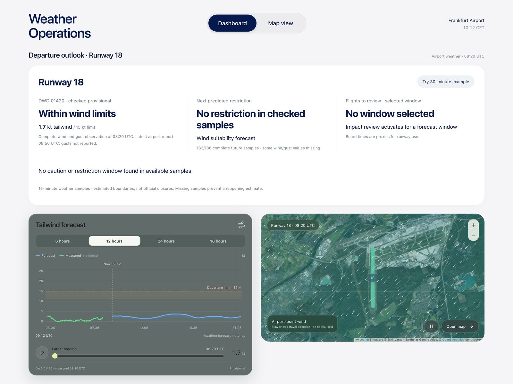

Frankfurt Forecast
A weather operations dashboard for Frankfurt Airport. For each runway it checks live wind against departure limits, forecasts when tailwind or gusts will cause a restriction, and flags the flights in that window for review. Built with my team at the AI Hub Frankfurt hackathon.
DWD stationLive wind and gust observations
METAR / TAFLatest airport weather reports
ICON model15-minute forecast samples up to 48 hours
